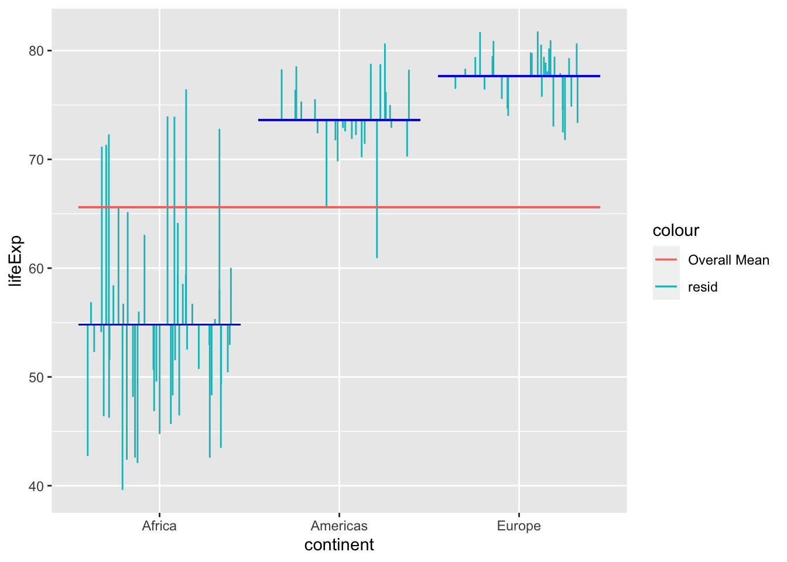

library(gapminder)
# create a new data frame that only focuses on data from 2007
gapminder_2007 <- subset(
gapminder, # the data set
year == 2007
)
mean(gapminder_2007$lifeExp)[1] 67.00742General linear models allow you to analyse data in which the dependent variable is continuous. For example, if you are analysing the height of a group of individuals, you might use one of the following analyses:
t-test, comparisons between two conditions e.g. are males taller than females?
regression, one or more predictors of a single outcome e.g. does foot size, weight etc. predict height? (Note that correlations are equivalent to a regression with a single predictor)
ANOVA, comparisons between 3 or more conditions or between multiple categorical factors, e.g. are there differences in height between sexes and nationalities?
Linear refers to the dependent variable being continuous.
General refers to the fact that the independent variables can both be continuous (e.g. regression) or categorical (e.g. t-test or ANOVA).
In general linear models all analyses involve creating a model, and capturing what is and isn’t explained by the model (i.e. the error of the model). All analyses in general linear models can be formulated as:
\[ Data = Model + Error \]
Data: The dependent variable in your analysis Model: A model which predicts a phenomenon. This could be multiple independent variables. Error: What data isn’t explained by the model.
General Linear Models need numerical values for the predictors. As categorical variables (e.g. Sex) don’t have a numeric value by default, we have to substitute the categories with numbers:
If you want to estimate what someone’s life expectancy would be in 2007, you could look at the mean life expectancy using the gapminder data. In terms of how this corresponds to the above model:
\[ Data = Model + Error \]
\[ estimatedLifeExpectancy = mean(lifeExpectancy) + Error \]
library(gapminder)
# create a new data frame that only focuses on data from 2007
gapminder_2007 <- subset(
gapminder, # the data set
year == 2007
)
mean(gapminder_2007$lifeExp)[1] 67.00742\[ estimatedLifeExpectancy = 67.01 + Error \]
Which could be visualised as:
library(ggplot2)
ggplot(
gapminder_2007, aes(x=rank(lifeExp), y=lifeExp)
) +
geom_jitter() +
geom_hline(yintercept = mean(gapminder_2007$lifeExp), color="blue") +
geom_segment(
aes(
xend = rank(lifeExp),
yend = mean(lifeExp),
color = "resid"
)
) +
theme(legend.position = "none")
Fig. 1.
In English, the above model and figure allow you to predict that anyone’s life expectancy will be 67 years. However, as you can also see, there’s a huge amount of error, i.e. variance in life expectancy that is not explained by the model. These errors can be squared and summed to give the sum of squares, a statistic of how much error there is around the model:
\[ SS = \sum(Y_i-\bar{Y})^2 \]
Which can be visualised as follows:
ggplot(
gapminder_2007,
aes(
x=rank(lifeExp),
# y is the square of the difference between each data point and the mean across all data poins. Once these are summed you will get the sum of squares.
y=(lifeExp-mean(lifeExp))^2
)
) +
geom_point() +
geom_segment(
aes(
xend = rank(lifeExp),
yend = 0,
color = "resid"
)
) +
theme(legend.position = "none")
Fig. 2.
You can directly compare fig. 1. and fig. 2. to see how much error is associated with each data point compared to the model. Fig. 2. is positive because it is the distance of the data-point from the mean squared. If you added together all the squares (pink lines) in fig. 2. that would give you the sum of squares.
As you may have guessed, it is possible to have more precise models that have less error, and thus a smaller sum of squares. The sum of squares around the mean is also the total sum of squares, and the total variance. When we calculate the proportion of the variance that a model explains, we are comparing it to this variance around the mean.
Let’s explore those possibilities now.
T-tests are restricted to comparisons between 2 conditions/groups, so we will restrict the Gapminder data to allow a comparison between 2 continents. To see if life expectancy was different if you are born in Europe compared to the Americas, let’s first check what the sum of squares is when you just use the mean as the model of life expectancy across these contents:
gapminder_americas_europe <- subset(
gapminder_2007, # the data set
continent == "Europe" | continent == "Americas"
)
ggplot(
gapminder_americas_europe, aes(x=rank(lifeExp), y=lifeExp)
) +
geom_point() +
geom_hline(yintercept = mean(gapminder_americas_europe$lifeExp), color="blue") +
geom_segment(
aes(
xend = rank(lifeExp),
yend = mean(lifeExp),
color = "resid"
)
) +
theme(legend.position = "none")
Fig. 3. The errors around the mean of life expectancy across Europe and American countries.
Once we square the errors in the pink lines above, we’ll get the squares:
ggplot(
gapminder_americas_europe,
aes(
x=rank(lifeExp),
# y is the square of the difference between each data point and the mean across all data poins. Once these are summed you will get the sum of squares.
y=(lifeExp-mean(lifeExp))^2
)
) +
geom_point() +
geom_segment(
aes(
xend = rank(lifeExp),
yend = 0,
color = "resid"
)
) +
theme(legend.position = "none")
sum((gapminder_americas_europe$lifeExp - mean(gapminder_americas_europe$lifeExp))^2)[1] 953.4478And when you add all of these together:
\[ SumOfSquares = \sum(Y_i-\bar{Y})^2 = 953.4478 \]
So if the model we create for a t-test would result in a smaller sum of squares then that suggests it’s a more precise model for estimating life expectancy than simply using the mean as a model. This is because this would mean there’s less error in this model. Let’s model this using a t-test. For this we will need to dummy code country:
# create a column to place 1 or -1 for each row dependent on the country
contDummy = NA
contDummy[gapminder_americas_europe$continent == "Europe"] = 1
contDummy[gapminder_americas_europe$continent == "Americas"] = -1
gapminder_americas_europe = cbind(contDummy,gapminder_americas_europe)
rmarkdown::paged_table(head(gapminder_americas_europe))Now that we have dummy coded the continent, we can create a new model to try to predict an individual’s life expectancy based on which continent they are from
\[ Y = intercept + \beta * dummyVariable + Error \]
\[ lifeExp = mean(lifeExp) + \beta * ContDummy + Error \]
Y being the predicted life expectancy.
\(\bar{Y}\) being the mean life expectancy regardless of continent. For a t-test this is also the \(intercept\).
\(\beta\) being how much to adjust the prediction based on which continent the person is from
\(ContDummy\) being 1 (Europe) or -1 (Americas) to reflect which continent the participant is from
\(Error\) being any error in the prediction not captured by the model
To get the \(intercept\) and \(\beta\) for the above formula let’s use the lm function in R:
continent_ttest <- lm(lifeExp ~ contDummy, gapminder_americas_europe)
continent_ttest$coefficients[1] (Intercept)
75.62836 continent_ttest$coefficients[2]contDummy
2.02024 gapminder_americas_europe$t_fit = continent_ttest$coefficients[1] + # intercept
continent_ttest$coefficients[2] * # gradient
gapminder_americas_europe$contDummy
ggplot(gapminder_americas_europe, aes(x = contDummy, y = lifeExp)) +
geom_segment(
position = "jitter",
#arrow = arrow(length = unit(0.01, "npc"),ends = "first"),
aes(
xend = contDummy,
yend = t_fit,
color = "resid"
)
) +
geom_segment(aes(
x = -1.9,
xend = -.1,
y = -1 * continent_ttest$coefficients[2] + continent_ttest$coefficients[1],
yend = -1 * continent_ttest$coefficients[2] + continent_ttest$coefficients[1]),
color = "blue"
) +
geom_segment(
aes(
x = 0.1,
xend = 1.9,
y = 1 * continent_ttest$coefficients[2] + continent_ttest$coefficients[1],
yend = 1 * continent_ttest$coefficients[2] + continent_ttest$coefficients[1]
),
color = "blue"
) +
geom_segment(
aes(
x = - 1.9,
xend = 1.9,
y = mean(gapminder_americas_europe$lifeExp),
yend = mean(gapminder_americas_europe$lifeExp)
),
color = "dark green"
)Warning: Use of `gapminder_americas_europe$lifeExp` is discouraged.
ℹ Use `lifeExp` instead.
Use of `gapminder_americas_europe$lifeExp` is discouraged.
ℹ Use `lifeExp` instead.
Fig. X. Countries in the americas are dummy coded as -1 and countries in Europe are dummy coded as 1. Note that jittering has been used to help visualise variation within continents, and so all countries in Americas had a \(contDummy\) score of -1, even if the jittering above makes it look like participants from Europe had slightly different \(contDummy\) values to each other.
So now that we’ve visualised the predictions and the error, lets summarise these errors with their sum of squares:
#temp_summary <- summary(lm(lifeExp ~ contDummy, data = gapminder_americas_europe))
summary(aov(lifeExp ~ contDummy, data = gapminder_americas_europe)) Df Sum Sq Mean Sq F value Pr(>F)
contDummy 1 222.6 222.62 16.14 0.000186 ***
Residuals 53 730.8 13.79
---
Signif. codes: 0 '***' 0.001 '**' 0.01 '*' 0.05 '.' 0.1 ' ' 1# between
overall_mean <- mean(gapminder_americas_europe$lifeExp)
europe_mean <- mean(gapminder_americas_europe$lifeExp[gapminder_americas_europe$contDummy == 1])
america_mean <- mean(gapminder_americas_europe$lifeExp[gapminder_americas_europe$contDummy == -1])
ss_between <-
sum(gapminder_americas_europe$contDummy == 1) * (europe_mean - overall_mean)^2 +
sum(gapminder_americas_europe$contDummy == -1) * (america_mean - overall_mean)^2
top_half = ss_between
ss_within = (
sum((gapminder_americas_europe$lifeExp[gapminder_americas_europe$contDummy == 1] - europe_mean)^2) +
sum((gapminder_americas_europe$lifeExp[gapminder_americas_europe$contDummy == -1] - america_mean)^2)
)
bottom_half = (ss_within/(length(gapminder_americas_europe$lifeExp) - 2))
top_half/bottom_half[1] 16.14453# Compare with a t-test
t.test(
gapminder_americas_europe$lifeExp[gapminder_americas_europe$contDummy == 1],
gapminder_americas_europe$lifeExp[gapminder_americas_europe$contDummy == -1],
var.equal = T
)
Two Sample t-test
data: gapminder_americas_europe$lifeExp[gapminder_americas_europe$contDummy == 1] and gapminder_americas_europe$lifeExp[gapminder_americas_europe$contDummy == -1]
t = 4.018, df = 53, p-value = 0.0001864
alternative hypothesis: true difference in means is not equal to 0
95 percent confidence interval:
2.023525 6.057435
sample estimates:
mean of x mean of y
77.64860 73.60812 4.018^2[1] 16.14432# look at a t-distribution compared to an f-distributionSo the new sum of squares is 730.8276, which is smaller than it was when we just used the mean regardless of continent (953.4478) which also summarises the total variance (around the mean). In fact, we can use these 2 numbers to calculate the \(r^2\) value (i.e. what proportion of the variance around the mean is explained by the model). The amount of variance explained by the model can be calculated by:
\[ totalSumOfSquares - modelSumOfSquares = totalError - modelError \]
This allows us to calculate an r-value and thus a p-value:
this_r2 = 1 - sum(gapminder_americas_europe$t_res_squared)/sum((gapminder_americas_europe$lifeExp - mean(gapminder_americas_europe$lifeExp))^2)
this_r = sqrt(this_r2)
this_r[1] 1t.test(
gapminder_americas_europe$lifeExp[gapminder_americas_europe$contDummy == 1],
gapminder_americas_europe$lifeExp[gapminder_americas_europe$contDummy == -1],
var.equal = T
)
Two Sample t-test
data: gapminder_americas_europe$lifeExp[gapminder_americas_europe$contDummy == 1] and gapminder_americas_europe$lifeExp[gapminder_americas_europe$contDummy == -1]
t = 4.018, df = 53, p-value = 0.0001864
alternative hypothesis: true difference in means is not equal to 0
95 percent confidence interval:
2.023525 6.057435
sample estimates:
mean of x mean of y
77.64860 73.60812 summary(lm(lifeExp ~ contDummy, gapminder_americas_europe))
Call:
lm(formula = lifeExp ~ contDummy, data = gapminder_americas_europe)
Residuals:
Min 1Q Median 3Q Max
-12.6921 -2.1364 0.4494 2.5671 7.0449
Coefficients:
Estimate Std. Error t value Pr(>|t|)
(Intercept) 75.6284 0.5028 150.416 < 2e-16 ***
contDummy 2.0202 0.5028 4.018 0.000186 ***
---
Signif. codes: 0 '***' 0.001 '**' 0.01 '*' 0.05 '.' 0.1 ' ' 1
Residual standard error: 3.713 on 53 degrees of freedom
Multiple R-squared: 0.2335, Adjusted R-squared: 0.219
F-statistic: 16.14 on 1 and 53 DF, p-value: 0.0001864this_r2[1] 1You may notice above that the manually calculated \(r^2\) value is identical to the “Multiple R-Squared”, rather than the “Adjusted R-squared”. So what’s the difference between r-squared and adjusted r-squared?
To show that we’ve achieved the same as a t-test, let’s run a between subjects t-test that assumes the variance is equal between the groups (which is an assumption of a general linear model), and see if the p-values are the same:
#953.4478/730.8276
continent_ttest <- t.test(
gapminder_americas_europe$lifeExp[gapminder_americas_europe$contDummy == -1],
gapminder_americas_europe$lifeExp[gapminder_americas_europe$contDummy == 1],
# general linear models assume the variance between conditions is equal
var.equal = T
)
continent_model <- summary(lm(lifeExp ~ contDummy, gapminder_americas_europe))
continent_ttest$p.value[1] 0.0001863749continent_model$coefficients[2,4] # p-value for the continent as a predictor[1] 0.0001863749There are some advantages of conducting a t-test using the “lm” functionality:
You can capture residuals
You have more flexibility to make more complex models
Let’s now see how we can proceed if we have a more complex design, i.e. 3 or more levels and/or more than 1 factor, using ANOVAs.
## Automatic calculation
gapminder_3_continents <- subset(
gapminder_2007,
continent == "Europe" | continent == "Americas" | continent == "Africa"
)
summary(aov(lifeExp ~ factor(continent), data = gapminder_3_continents)) Df Sum Sq Mean Sq F value Pr(>F)
factor(continent) 2 12017 6008 114.4 <2e-16 ***
Residuals 104 5461 53
---
Signif. codes: 0 '***' 0.001 '**' 0.01 '*' 0.05 '.' 0.1 ' ' 1## Manual calculation
ss_between = (
((mean(gapminder_3_continents$lifeExp[gapminder_3_continents$continent=="Europe"])-mean(gapminder_3_continents$lifeExp))^2) * sum(gapminder_3_continents$continent=="Europe") +
((mean(gapminder_3_continents$lifeExp[gapminder_3_continents$continent=="Americas"])-mean(gapminder_3_continents$lifeExp))^2) * sum(gapminder_3_continents$continent=="Americas") +
((mean(gapminder_3_continents$lifeExp[gapminder_3_continents$continent=="Africa"])-mean(gapminder_3_continents$lifeExp))^2) * sum(gapminder_3_continents$continent=="Africa")
)
totalSS = sum((gapminder_3_continents$lifeExp - mean(gapminder_3_continents$lifeExp))^2)
shortcut_ss_within = totalSS - ss_between
ss_within_long = sum(
(gapminder_3_continents$lifeExp[gapminder_3_continents$continent=="Europe"]-mean(gapminder_3_continents$lifeExp[gapminder_3_continents$continent=="Europe"]))^2,
(gapminder_3_continents$lifeExp[gapminder_3_continents$continent=="Americas"]-mean(gapminder_3_continents$lifeExp[gapminder_3_continents$continent=="Americas"]))^2,
(gapminder_3_continents$lifeExp[gapminder_3_continents$continent=="Africa"]-mean(gapminder_3_continents$lifeExp[gapminder_3_continents$continent=="Africa"]))^2
)
(ss_between/2)/(ss_within_long/(length(gapminder_3_continents$lifeExp)-3))[1] 114.4212To visualise this
lm_3_continents <- summary(lm(lifeExp ~ factor(continent), data = gapminder_3_continents))
lm_3_continents$coefficients Estimate Std. Error t value Pr(>|t|)
(Intercept) 54.80604 1.004904 54.53856 2.466786e-78
factor(continent)Americas 18.80208 1.763600 10.66119 2.243512e-18
factor(continent)Europe 22.84256 1.661388 13.74908 3.900175e-25mean(gapminder_3_continents$lifeExp[gapminder_3_continents$continent=="Europe"])[1] 77.6486gapminder_3_continents$continent_mean = lm_3_continents$coefficients[1,1] # intercept, which is mean for Africa as there are only "Americas" and "Europe" factors.
gapminder_3_continents$continent_mean[gapminder_3_continents$continent == "Americas"] = gapminder_3_continents$continent_mean[gapminder_3_continents$continent == "Americas"] + lm_3_continents$coefficients[2,1]
gapminder_3_continents$continent_mean[gapminder_3_continents$continent == "Europe"] = gapminder_3_continents$continent_mean[gapminder_3_continents$continent == "Europe"] + lm_3_continents$coefficients[3,1]
ggplot(gapminder_3_continents, aes(x = continent, y = lifeExp)) +
geom_segment(
position = "jitter",
#arrow = arrow(length = unit(0.01, "npc"),ends = "first"),
aes(
xend = continent,
yend = continent_mean,
color = "resid"
)
) +
geom_segment(aes(
x = 0.55,
xend = 1.45,
y = lm_3_continents$coefficients[1,1],
yend = lm_3_continents$coefficients[1,1]),
color = "blue"
) +
geom_segment(aes(
x = 1.55,
xend = 2.45,
y = lm_3_continents$coefficients[2,1] + lm_3_continents$coefficients[1,1],
yend = lm_3_continents$coefficients[2,1] + lm_3_continents$coefficients[1,1]),
color = "blue"
) +
geom_segment(aes(
x = 2.55,
xend = 3.45,
y = lm_3_continents$coefficients[3,1] + lm_3_continents$coefficients[1,1],
yend = lm_3_continents$coefficients[3,1] + lm_3_continents$coefficients[1,1]),
color = "blue"
) +
geom_segment(
aes(
x = 0.55,
xend = 3.45,
y = mean(gapminder_3_continents$lifeExp),
yend = mean(gapminder_3_continents$lifeExp),
color = "Overall Mean"
)
)Warning: Use of `gapminder_3_continents$lifeExp` is discouraged.
ℹ Use `lifeExp` instead.
Use of `gapminder_3_continents$lifeExp` is discouraged.
ℹ Use `lifeExp` instead.
Fig. XXX. Our model in the figure above considers the distance from each of the continent’s mean to the overall mean as part of the explained variance. For each data point, the squared distance from the the mean line to the overall mean line is part of the sum of squares at the top of the formula.
Let’s create data to allow us to compare between 2 years, and between Europe and Americas
# create a new data frame that only focuses on data from 2007
gapminder_2_by_2 <- subset(
gapminder, # the data set
year == 2002 & continent == "Africa" |
year == 2007 & continent == "Africa" |
year == 2002 & continent == "Europe" |
year == 2007 & continent == "Europe"
)
summary(lm(lifeExp ~ factor(year) * factor(continent), gapminder_2_by_2))
Call:
lm(formula = lifeExp ~ factor(year) * factor(continent), data = gapminder_2_by_2)
Residuals:
Min 1Q Median 3Q Max
-15.1930 -4.7758 -0.1898 3.1180 22.4188
Coefficients:
Estimate Std. Error t value Pr(>|t|)
(Intercept) 53.3252 1.0921 48.830 <2e-16
factor(year)2007 1.4808 1.5444 0.959 0.339
factor(continent)Europe 23.3754 1.8055 12.947 <2e-16
factor(year)2007:factor(continent)Europe -0.5328 2.5533 -0.209 0.835
(Intercept) ***
factor(year)2007
factor(continent)Europe ***
factor(year)2007:factor(continent)Europe
---
Signif. codes: 0 '***' 0.001 '**' 0.01 '*' 0.05 '.' 0.1 ' ' 1
Residual standard error: 7.875 on 160 degrees of freedom
Multiple R-squared: 0.6727, Adjusted R-squared: 0.6665
F-statistic: 109.6 on 3 and 160 DF, p-value: < 2.2e-16summary(aov(lifeExp ~ factor(year) * factor(continent), gapminder_2_by_2)) Df Sum Sq Mean Sq F value Pr(>F)
factor(year) 1 68 68 1.093 0.297
factor(continent) 1 20319 20319 327.645 <2e-16 ***
factor(year):factor(continent) 1 3 3 0.044 0.835
Residuals 160 9922 62
---
Signif. codes: 0 '***' 0.001 '**' 0.01 '*' 0.05 '.' 0.1 ' ' 1manual calculation of f-value for 2 x 2
library(tidyverse)── Attaching packages ─────────────────────────────────────── tidyverse 1.3.2 ──
✔ tibble 3.1.8 ✔ dplyr 1.0.10
✔ tidyr 1.2.1 ✔ stringr 1.4.1
✔ readr 2.1.3 ✔ forcats 0.5.2
✔ purrr 0.3.5
── Conflicts ────────────────────────────────────────── tidyverse_conflicts() ──
✖ dplyr::filter() masks stats::filter()
✖ dplyr::lag() masks stats::lag()overallMeanLifeExp = mean(gapminder_2_by_2$lifeExp)
totalVar = sum((gapminder_2_by_2$lifeExp - mean(gapminder_2_by_2$lifeExp))^2)
gapminder_2_by_2 %>%
group_by(continent, year) %>%
summarise(
mean_lifeExp = mean(lifeExp),
countries = length(lifeExp),
betweenSS = countries * ((overallMeanLifeExp - mean_lifeExp)^2)
) -> year_continent_means`summarise()` has grouped output by 'continent'. You can override using the
`.groups` argument.year_continent_means# A tibble: 4 × 5
# Groups: continent [2]
continent year mean_lifeExp countries betweenSS
<fct> <int> <dbl> <int> <dbl>
1 Africa 2002 53.3 52 4396.
2 Africa 2007 54.8 52 3094.
3 Europe 2002 76.7 30 6033.
4 Europe 2007 77.6 30 6866.sum(year_continent_means$betweenSS)[1] 20389.47totalVar[1] 30311.89sum(year_continent_means$betweenSS)/totalVar[1] 0.6726556(sum(year_continent_means$betweenSS))/totalVar[1] 0.6726556df_total <- length(gapminder_2_by_2$country) - 1
df_res <- length(gapminder_2_by_2$country) -
1 - #data points
3 # predictors
ss_res = totalVar - sum(year_continent_means$betweenSS)
1 - (ss_res/df_res)/(totalVar/df_total)[1] 0.6665179##
# break down of types of variance
##
continent_df <- gapminder_2_by_2 %>%
group_by(continent) %>%
summarise(
mean_lifeExp = mean(lifeExp),
countries = length(lifeExp),
betweenSS = countries * ((overallMeanLifeExp - mean_lifeExp)^2)
)
sum(continent_df$betweenSS)[1] 20318.97year_df <- gapminder_2_by_2 %>%
group_by(year) %>%
summarise(
mean_lifeExp = mean(lifeExp),
countries = length(lifeExp),
betweenSS = countries * ((overallMeanLifeExp - mean_lifeExp)^2)
)
sum(year_df$betweenSS)[1] 67.79278##
# interaction
##
sum(year_continent_means$betweenSS) - sum(continent_df$betweenSS) - sum(year_df$betweenSS)[1] 2.70036gapminder# A tibble: 1,704 × 6
country continent year lifeExp pop gdpPercap
<fct> <fct> <int> <dbl> <int> <dbl>
1 Afghanistan Asia 1952 28.8 8425333 779.
2 Afghanistan Asia 1957 30.3 9240934 821.
3 Afghanistan Asia 1962 32.0 10267083 853.
4 Afghanistan Asia 1967 34.0 11537966 836.
5 Afghanistan Asia 1972 36.1 13079460 740.
6 Afghanistan Asia 1977 38.4 14880372 786.
7 Afghanistan Asia 1982 39.9 12881816 978.
8 Afghanistan Asia 1987 40.8 13867957 852.
9 Afghanistan Asia 1992 41.7 16317921 649.
10 Afghanistan Asia 1997 41.8 22227415 635.
# … with 1,694 more rows20319 +
68 +
3[1] 20390gapminder_2_by_2$pop_split = "high"
gapminder_2_by_2$pop_split[gapminder_2_by_2$pop < median(gapminder_2_by_2$pop)] = "low"
gapminder_2_by_2 %>%
group_by(continent, year, pop_split) %>%
summarise(
mean_lifeExp = mean(lifeExp),
countries = length(lifeExp),
betweenSS = countries * ((overallMeanLifeExp - mean_lifeExp)^2)
) -> three_way_summary`summarise()` has grouped output by 'continent', 'year'. You can override using
the `.groups` argument.sum(three_way_summary$betweenSS)[1] 20403.63summary(lm(lifeExp ~ factor(year) * factor(continent), gapminder_2_by_2))
Call:
lm(formula = lifeExp ~ factor(year) * factor(continent), data = gapminder_2_by_2)
Residuals:
Min 1Q Median 3Q Max
-15.1930 -4.7758 -0.1898 3.1180 22.4188
Coefficients:
Estimate Std. Error t value Pr(>|t|)
(Intercept) 53.3252 1.0921 48.830 <2e-16
factor(year)2007 1.4808 1.5444 0.959 0.339
factor(continent)Europe 23.3754 1.8055 12.947 <2e-16
factor(year)2007:factor(continent)Europe -0.5328 2.5533 -0.209 0.835
(Intercept) ***
factor(year)2007
factor(continent)Europe ***
factor(year)2007:factor(continent)Europe
---
Signif. codes: 0 '***' 0.001 '**' 0.01 '*' 0.05 '.' 0.1 ' ' 1
Residual standard error: 7.875 on 160 degrees of freedom
Multiple R-squared: 0.6727, Adjusted R-squared: 0.6665
F-statistic: 109.6 on 3 and 160 DF, p-value: < 2.2e-16summary(aov(lifeExp ~ factor(year) * factor(continent), gapminder_2_by_2)) Df Sum Sq Mean Sq F value Pr(>F)
factor(year) 1 68 68 1.093 0.297
factor(continent) 1 20319 20319 327.645 <2e-16 ***
factor(year):factor(continent) 1 3 3 0.044 0.835
Residuals 160 9922 62
---
Signif. codes: 0 '***' 0.001 '**' 0.01 '*' 0.05 '.' 0.1 ' ' 1summary(aov(lifeExp ~ factor(year) * factor(continent) * factor(pop_split), gapminder_2_by_2)) Df Sum Sq Mean Sq F value
factor(year) 1 68 68 1.067
factor(continent) 1 20319 20319 319.911
factor(pop_split) 1 13 13 0.212
factor(year):factor(continent) 1 3 3 0.046
factor(year):factor(pop_split) 1 0 0 0.000
factor(continent):factor(pop_split) 1 0 0 0.007
factor(year):factor(continent):factor(pop_split) 1 0 0 0.000
Residuals 156 9908 64
Pr(>F)
factor(year) 0.303
factor(continent) <2e-16 ***
factor(pop_split) 0.646
factor(year):factor(continent) 0.830
factor(year):factor(pop_split) 0.989
factor(continent):factor(pop_split) 0.931
factor(year):factor(continent):factor(pop_split) 0.988
Residuals
---
Signif. codes: 0 '***' 0.001 '**' 0.01 '*' 0.05 '.' 0.1 ' ' 1summary(lm(lifeExp ~ factor(year) * factor(continent) * factor(pop_split), gapminder_2_by_2))
Call:
lm(formula = lifeExp ~ factor(year) * factor(continent) * factor(pop_split),
data = gapminder_2_by_2)
Residuals:
Min 1Q Median 3Q Max
-15.5189 -4.8868 -0.3127 3.1208 22.0864
Coefficients:
Estimate
(Intercept) 52.96628
factor(year)2007 1.53805
factor(continent)Europe 23.52019
factor(pop_split)low 0.69131
factor(year)2007:factor(continent)Europe -0.59779
factor(year)2007:factor(pop_split)low -0.06377
factor(continent)Europe:factor(pop_split)low -0.26305
factor(year)2007:factor(continent)Europe:factor(pop_split)low 0.07923
Std. Error
(Intercept) 1.59392
factor(year)2007 2.21201
factor(continent)Europe 2.60286
factor(pop_split)low 2.21201
factor(year)2007:factor(continent)Europe 3.65535
factor(year)2007:factor(pop_split)low 3.12825
factor(continent)Europe:factor(pop_split)low 3.65535
factor(year)2007:factor(continent)Europe:factor(pop_split)low 5.16944
t value Pr(>|t|)
(Intercept) 33.230 < 2e-16
factor(year)2007 0.695 0.488
factor(continent)Europe 9.036 5.91e-16
factor(pop_split)low 0.313 0.755
factor(year)2007:factor(continent)Europe -0.164 0.870
factor(year)2007:factor(pop_split)low -0.020 0.984
factor(continent)Europe:factor(pop_split)low -0.072 0.943
factor(year)2007:factor(continent)Europe:factor(pop_split)low 0.015 0.988
(Intercept) ***
factor(year)2007
factor(continent)Europe ***
factor(pop_split)low
factor(year)2007:factor(continent)Europe
factor(year)2007:factor(pop_split)low
factor(continent)Europe:factor(pop_split)low
factor(year)2007:factor(continent)Europe:factor(pop_split)low
---
Signif. codes: 0 '***' 0.001 '**' 0.01 '*' 0.05 '.' 0.1 ' ' 1
Residual standard error: 7.97 on 156 degrees of freedom
Multiple R-squared: 0.6731, Adjusted R-squared: 0.6585
F-statistic: 45.89 on 7 and 156 DF, p-value: < 2.2e-1620319 +
68 +
3 +
13[1] 2040320403.63[1] 20403.63lifeExp_gdp <- lm(lifeExp ~ gdpPercap, gapminder_americas_europe)
summary(lifeExp_gdp)
Call:
lm(formula = lifeExp ~ gdpPercap, data = gapminder_americas_europe)
Residuals:
Min 1Q Median 3Q Max
-10.5218 -1.0845 -0.0026 1.6917 5.2296
Coefficients:
Estimate Std. Error t value Pr(>|t|)
(Intercept) 7.114e+01 6.466e-01 110.019 < 2e-16 ***
gdpPercap 2.504e-04 2.857e-05 8.765 6.86e-12 ***
---
Signif. codes: 0 '***' 0.001 '**' 0.01 '*' 0.05 '.' 0.1 ' ' 1
Residual standard error: 2.71 on 53 degrees of freedom
Multiple R-squared: 0.5917, Adjusted R-squared: 0.584
F-statistic: 76.82 on 1 and 53 DF, p-value: 6.861e-12gapminder_americas_europe$gdp_fit = lifeExp_gdp$coefficients[1] + # intercept
lifeExp_gdp$coefficients[2] * # gradient
gapminder_americas_europe$gdpPercap
ggplot(gapminder_americas_europe, aes(x = gdpPercap, y = lifeExp)) +
geom_smooth(method = "glm", se = F) +
geom_segment(
position = "jitter",
#arrow = arrow(length = unit(0.01, "npc"),ends = "first"),
aes(
xend = gdpPercap,
yend = gdp_fit,
color = "residual"
)
) +
geom_segment(
aes(
x = 0.55,
xend = 50000,
y = mean(gapminder_americas_europe$lifeExp),
yend = mean(gapminder_americas_europe$lifeExp),
color = "Overall Mean"
),
size = 1,
color = "dark green"
)Warning: Using `size` aesthetic for lines was deprecated in ggplot2 3.4.0.
ℹ Please use `linewidth` instead.Warning: Use of `gapminder_americas_europe$lifeExp` is discouraged.
ℹ Use `lifeExp` instead.
Use of `gapminder_americas_europe$lifeExp` is discouraged.
ℹ Use `lifeExp` instead.`geom_smooth()` using formula = 'y ~ x'